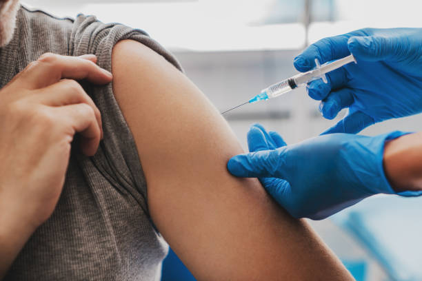

-
Trending in Science

Starship
547 Tuites -
Sports · Trending
Joe Rogan
5,218 Tuites -
The New York Times

 · Yesterday
· Yesterday
CNN's Cuomo conundrum: A star anchor with a brother in trouble -
COVID-19 · LIVE

COVID-19: News and Updates for Massachusetts -
Bloomberg Opinion
· Yesterday
Thinking about getting a booster? Read this first. -
Trending in United States
Wonder Bread
1,259 Tuits